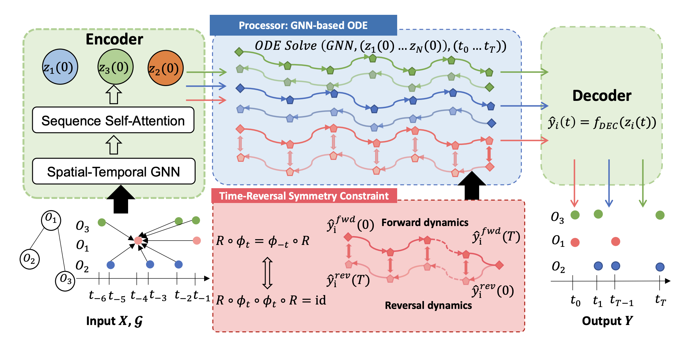
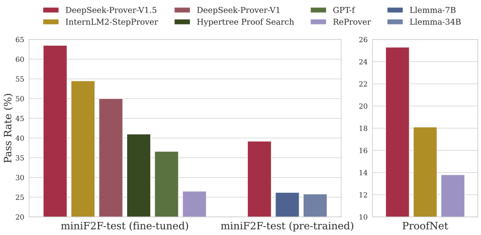
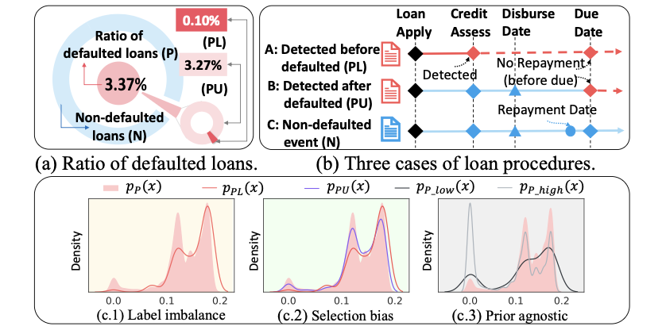

About
Education
Experiences
News
- Awarded SenseTime Scholarship, a research scholarship selecting 30 undergraduate AI talents in China.
- Our paper was selected for the Best Paper Award and a Spotlight Talk at the Neurips 2023 DLDE Workshop!
- One paper on Physics informed Machine Learning (TANGO) now available on arXiv.
- One paper accepted to AAAI 2023
Publications and Manuscripts

TANGO: Time-Reversal Latent GraphODE for Multi-Agent Dynamical Systems
Under Review, 2024
Best Paper Award at DLDE workshop at Neurips 2023.

DeepSeek-Prover-V1. 5: Harnessing Proof Assistant Feedback for Reinforcement Learning and Monte-Carlo Tree Search
Preperint, 2024

Positive Distribution Pollution: Rethinking Positive Unlabeled Learning From a Unified Perspective
AAAI Conference on Artificial Intelligence (AAAI 2023)